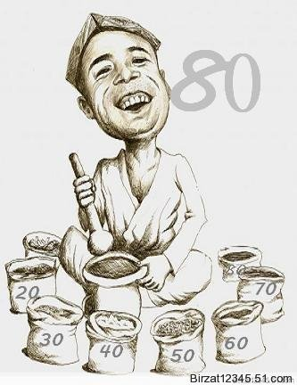
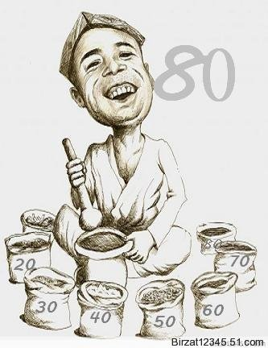

ئالدىنقى يازما
ئالدىنقى يازما كېيىنكى يازما
كېيىنكى يازما
بىرزات دېگەن ئىسىمنى لەقەم قىلىشىمدىكى ئارقا كۆرۈنۈش
ئاپتور:Birzat ۋاقتى:2010-05-30


ئەسسالامۇ ئەلەيكۇم مۆھتىرەم تور ئەھلى. بەزى تورداش دوستلارنىڭ چۈشەنچە تەلەپ قىلىپ يازغان ئۇچۇرلىرىغا قارىتا بۈگۈن << بىرزات بلوگى>> دېگەن نام ھەققىدە ئازىراق ئىزاھات بىرىپ قويۇشنى لايىق تاپتىم. تور دۇنياسىغا قەدەم باسقان دەسلەپكى ۋاقىتتا (2000 - يىللىرى بولسا كېرەك) چايخانىلارغا كىرىپ پاراڭلىشىش مودا بولىۋاتقان مەزگىللەر ئىكەن. بۇ خىل مەۋھۇم دۇنيادا ئەركىن -ئازادە پاراڭلىشىش، ئۇچۇر ئالماشتۇرۇش مېنى ئۆزىگە بەكلا قېزىقتۇرۋالغان ئىدى. شۇنىڭ بىلەن دەسلەپتا چايخانىلارغا نامسىز كىرىپ خەت بېسىشنى مەشىق قىلىۋالدىم، ئۇندىن كىيىن باشقىلارنى ئۈلگە قىلىپ بىر ئىسىم ئىشلىتىش توغۇرلۇق خىلى ئويلاندىم، دەسلاپتا يۇمۇرلۇق بولسۇن ئۈچۈن << پاينەكباش >> دېگەن ئىسىمنى تېزىملىتىپ كىرىپ باشقىلار بىلەن پاراڭلاشتىم. بارا-بارا بۇ پاراڭلىشىشلارغا خۇمار بولۇپ باشقا ئىشلارغا بەك خوش يېقىپ كەتمەيدىغان، كومپيۇتېر ئالدىدا بىر ئولتۇرسام قورسىقىمنىڭ ئاچقىننىمۇ تۇيماي ئەسنەپ ئولتۇرىۋېرىدىغان ھالەت شەكىللىنىشكە باشلىدى. تۇرمۇش تەرتىپسىز، مەنىۋىيتىمدە ئېغىر بىر خامۇشلۇق ھۆكۈم سۈرەتتە. كىيىن ئۇيغۇر تور بەتچىلىكىدە مۇنازىرە مۇنبەرلىرى پەيدا بولۇشقا باشلىدى. ئۇنىڭدىكى ئۇيغۇرچە خەت يازغىلى بولۇش، ئەھمىيەتلىك-ئادەمگە نەپ بىرىدىغان تېما-يازمىلارنىڭ ئىلان قىلىنىدىغانلىقى دېققىتىمنى تارتىشقا باشلىدى. دەسلاپتا مۇنبەرلەرگە ئارىلاپ كىرىدىغان ئادەم كىيىن بىسىپ ئولتۇرىدىغان بولدۇم. شۇ كۈنلەردە ئىزدىنىش مۇنبىرىگە << ھورۇن مۈشۈك >> دېگەن نامنى تېزىملىتىپ ئەزا بولدۇم. مۇنازىرىلەرگە ئاكتىپ قاتناشتىم، ئانچە مۇنچە ئۇيغۇر تېبابىتى ئۈگۈنۈش ۋە ئەمەلىيەت جەريانىدا ھېس قىلغانلىرىمنى يېزىپمۇ تۇردۇم. كىيىن ئىزدىنىشتىكى بەزى بىر باشقۇرغۇچىلارنىڭ تېما تەستىقلاشتا ھوقۇقىدىن پايدىلىنىپ بەزى بىر قالايمىقانچىلىقلارنى پەيدا قىلىۋاتقانلىقىنى كۆرۈپ يوشۇرۇن نام بىلەن كىرىپ ئۇلارنى ئازىراق ئەدەبلەپ قويماقچى بولدۇم. شۇنىڭ بىلەن ، <<بىر كىشى>>، << بىر ئادەم >> دېگەن مەنىدىكى << بىرزات >> نامىنى ئىشلىتىپ << سەيياھ بىر زاتنىڭ ئىزدىنىشقا قىلغان سەپىرى >> دېگەن تېمىنى يېزىشقا باشلىدىم. تېما باشلىنىپ ئاخىرلاشقۇچە بولغان ئارىلىقتا << بىرزات دېگەن بۇ كېشى كىم ؟>> دېگەن توغرىسىدا كۆپ بەس-مۇنازىرىلەر بولۇپ كەتتى. كىيىن شۇ چاغدىكى مۇنبەر باشلىقى جەۋلان ھەممىنى << كولدۇرلىتىۋاتقان >> بىر زات نامىدىكى كىشىنىڭ ھورۇن مۈشۈك ئىكەنلىكىنى ئاشكارلاپ قويدى. شۇنىڭدىن كىيىن ئىزدىنىشتا بىر مەزگىل ھەر ئىككىلا ئىسىم بىلەن تەڭ مەۋجۇت بولۇپ يۈرۈۋەردىم. ياشنىڭ چوڭيىشىغا قاراپ ھورۇن مۈشۈك دېگەن ئىسسىمۇ سەل غەلىتە تۇيۇلىدىغان بولۇپ قالغىلى تۇردى. شۇنىڭ بىلەن << ھورۇن مۈشۈك>> تاشلاپ << بىرزات >> نى ساقلاپ قالدىم ھەمدە بۇ ئىسىم تور دۇنياسىدا ۋاقىتنىڭ ئۆتىشى بىلەن ماڭا تەخەللۇس بولۇپ سېڭىپمۇ قالدى.
شەخسىي تور خاتىرەم ( بلوگىم ) تورداشلارغا ئىچىۋېتىلگەندىن كىيىن بىر زات دېگەن ئىسىم ھەققىدە بەزى بىر قارشى پىكىرلەرنىڭ بولىۋاتقانلىقىنى ھېس قىلىپ قالدىم. ئىزدىنىشتا بىرسى - ئۆزۈڭ ئىتقاد قىلىپ ھۆرمەتلەيدىغان يەككە-يىگانە، بىرزاتنى ئىسىم قىلىۋالغىنىڭ نېمىسى؟!! دەپ ئىنكاس يېزىپتۇ. ئىچىمگە بىر قورقۇنۇچ ، ۋەھىمە كىرىۋالدى. مەن راستلا خاتا قىلغاندىمەنمۇ، ئەگەر بۇ خاتا بولغان ھالەتتىمۇ مەن قەستەن قىلمىغان، مەن بۇ ئىسىمنى يەنە ئۆزگەرتىشىم كىرەكمۇ ؟...دېگەندەك سۇئاللار كاللامغا كىرىپلىۋالدى. مەن دىنى سەۋيىسى يۇقۇرى- ئىسلام ئىنىستىتۇتلىرىدا ئوقىغان دەپ بىلىدىغان بىر قانچە تورداشتىن بۇ ئىسىمنى ئىشلىتىشنىڭ دۇرۇس ، ياكى دۇرۇس بولمايدىغانلىقى ھەققىدە مەسلەھەت سورىدىم. ئۇلار : ئۇيغۇر تىلىنىڭ ئىستىمال ئادىتىگە نېسبەتەن ئىشلىتىش خاتا ئەمەس. بىرزات دېگەن - ئەل جامائەت ئىچىدە يۈز ئابرويلۇق، مەشھۇر كىشىلەرنى ھۆرمەتلەپمۇ ئىشلىتىمىز. لىكىن سىنىڭ بۇ ئىسىمنى ئىشلەتكىنىڭ سەل پوچىلىق بولۇپ قالدى...دەپ جاۋاپ بەردى. ئۆزۈممۇ ئۇيغۇر تېلىنىڭ ئىزاھلىق لۇغىتىغا قاراپ باقسام ئۇيغۇر تېلىدا بىر زات دېگەن ئىسىمنى شەخىسلەرگىمۇ ئىشلىتىدىغانلىقى ئايان بولدى.
بىر :
① سان < مات > ئەڭ كىچىك ساناق سان ۋە بۇ ساننى ئىپادىلىگەن «1» رەقىمى : گەپ بىر ، قۇلاق ئىككى (ماقال) . بىرنى بىرگە قوشسا ئىككى بولىدۇ .
② ئى . ئۈچىنچى شەخس قوشۇمچىسى «ى» بىلەن كېلىپ مەلۇم بىر«كىشى ، ئادەم» دېگەن مەنىنى بىلدۈرىدۇ : بىرىدىن قۇتۇلۇپ ئونىغا تۇتۇلدۇم (ماقال) .
③ ئال . ئىسىملارنىڭ ئالدىدا كېلىپ «شۇ» ، «مۇشۇ» ، «ئوخشاش بىر» دېگەن مەنىلەرنى بىلدۈرىدۇ : ھېيتەم ئەر - خوتۇن بىر مەكتەپتە ئىشلەيدۇ .
④ ئال . ئېنىقسىز قوشۇمچە ۋەزىپىسىدە كېلىپ «قانداقتۇر ، ئاللىقانداق ، قايسىدۇر ، قاچاندۇر»غا ئوخشاش مەنىلەرنى بىلدۈرىدۇ : بىر كۈنى . بىر ئاخشىمى . ....
...............
زات :
ئى [ئە]
①بىر ئۇرۇق-ئەجدادتىن تارالغان نەسىل ، ئەۋلاد : ياخشىدىن زات قالىدۇ ، ياماندىن داد (ماقال) .
② كېلىپ چىقىش : ئەسلىي زاتىڭنىڭ دېھقان ئىكەنلىكىنى ئۇنتۇما .
③ بىرەر ئىش - ھەرىكىتى ۋە خۇسۇسىيىتى بىلەن باشقىلاردىن پەرقلىنىپ تۇرىدىغان ئادەم ؛ شەخس : مەشھۇر زات . ئالىي زات .
④ جىنس : مەخلۇق بىرەھىم چۈشۈرۈپ پەرمان ، ئەركەك زاتىنى قويمىدى ئامان .
يۇقۇردىكىسى ئۇيغۇر تېلى ئىزاھلىق لۇغىتىدىكى بىر ۋە زاتقا بىرىلگەن ئىزاھات. مېنىڭ تورداشلارغا چۈشەنچە بەرمەكچى بولغىنىم بىرزات دېگەن تەخەللۇسنى خۇداغا شەك كەلتۈرۈش ئۈچۈنمۇ ( ئاللاھ ساقلىسۇن!) ، پوچىلىق قىىلىپ ياكى ئۈزۈمنى يۇقۇرى چاغلىۋىلىش ئۈچۈنمۇ قويىۋالغان ئەمەس. بۇنىڭ پەقەت << بىر ئادەم >>، << بىر كېشى >> دېگەن مەنىسىلا بار دېگەندىن ئىبارەتتۇر. كۆپچىلىك تورداشلارغا رەھمەت!

شەخسىي تور خاتىرەم ( بلوگىم ) تورداشلارغا ئىچىۋېتىلگەندىن كىيىن بىر زات دېگەن ئىسىم ھەققىدە بەزى بىر قارشى پىكىرلەرنىڭ بولىۋاتقانلىقىنى ھېس قىلىپ قالدىم. ئىزدىنىشتا بىرسى - ئۆزۈڭ ئىتقاد قىلىپ ھۆرمەتلەيدىغان يەككە-يىگانە، بىرزاتنى ئىسىم قىلىۋالغىنىڭ نېمىسى؟!! دەپ ئىنكاس يېزىپتۇ. ئىچىمگە بىر قورقۇنۇچ ، ۋەھىمە كىرىۋالدى. مەن راستلا خاتا قىلغاندىمەنمۇ، ئەگەر بۇ خاتا بولغان ھالەتتىمۇ مەن قەستەن قىلمىغان، مەن بۇ ئىسىمنى يەنە ئۆزگەرتىشىم كىرەكمۇ ؟...دېگەندەك سۇئاللار كاللامغا كىرىپلىۋالدى. مەن دىنى سەۋيىسى يۇقۇرى- ئىسلام ئىنىستىتۇتلىرىدا ئوقىغان دەپ بىلىدىغان بىر قانچە تورداشتىن بۇ ئىسىمنى ئىشلىتىشنىڭ دۇرۇس ، ياكى دۇرۇس بولمايدىغانلىقى ھەققىدە مەسلەھەت سورىدىم. ئۇلار : ئۇيغۇر تىلىنىڭ ئىستىمال ئادىتىگە نېسبەتەن ئىشلىتىش خاتا ئەمەس. بىرزات دېگەن - ئەل جامائەت ئىچىدە يۈز ئابرويلۇق، مەشھۇر كىشىلەرنى ھۆرمەتلەپمۇ ئىشلىتىمىز. لىكىن سىنىڭ بۇ ئىسىمنى ئىشلەتكىنىڭ سەل پوچىلىق بولۇپ قالدى...دەپ جاۋاپ بەردى. ئۆزۈممۇ ئۇيغۇر تېلىنىڭ ئىزاھلىق لۇغىتىغا قاراپ باقسام ئۇيغۇر تېلىدا بىر زات دېگەن ئىسىمنى شەخىسلەرگىمۇ ئىشلىتىدىغانلىقى ئايان بولدى.
بىر :
① سان < مات > ئەڭ كىچىك ساناق سان ۋە بۇ ساننى ئىپادىلىگەن «1» رەقىمى : گەپ بىر ، قۇلاق ئىككى (ماقال) . بىرنى بىرگە قوشسا ئىككى بولىدۇ .
② ئى . ئۈچىنچى شەخس قوشۇمچىسى «ى» بىلەن كېلىپ مەلۇم بىر«كىشى ، ئادەم» دېگەن مەنىنى بىلدۈرىدۇ : بىرىدىن قۇتۇلۇپ ئونىغا تۇتۇلدۇم (ماقال) .
③ ئال . ئىسىملارنىڭ ئالدىدا كېلىپ «شۇ» ، «مۇشۇ» ، «ئوخشاش بىر» دېگەن مەنىلەرنى بىلدۈرىدۇ : ھېيتەم ئەر - خوتۇن بىر مەكتەپتە ئىشلەيدۇ .
④ ئال . ئېنىقسىز قوشۇمچە ۋەزىپىسىدە كېلىپ «قانداقتۇر ، ئاللىقانداق ، قايسىدۇر ، قاچاندۇر»غا ئوخشاش مەنىلەرنى بىلدۈرىدۇ : بىر كۈنى . بىر ئاخشىمى . ....
...............
زات :
ئى [ئە]
①بىر ئۇرۇق-ئەجدادتىن تارالغان نەسىل ، ئەۋلاد : ياخشىدىن زات قالىدۇ ، ياماندىن داد (ماقال) .
② كېلىپ چىقىش : ئەسلىي زاتىڭنىڭ دېھقان ئىكەنلىكىنى ئۇنتۇما .
③ بىرەر ئىش - ھەرىكىتى ۋە خۇسۇسىيىتى بىلەن باشقىلاردىن پەرقلىنىپ تۇرىدىغان ئادەم ؛ شەخس : مەشھۇر زات . ئالىي زات .
④ جىنس : مەخلۇق بىرەھىم چۈشۈرۈپ پەرمان ، ئەركەك زاتىنى قويمىدى ئامان .
يۇقۇردىكىسى ئۇيغۇر تېلى ئىزاھلىق لۇغىتىدىكى بىر ۋە زاتقا بىرىلگەن ئىزاھات. مېنىڭ تورداشلارغا چۈشەنچە بەرمەكچى بولغىنىم بىرزات دېگەن تەخەللۇسنى خۇداغا شەك كەلتۈرۈش ئۈچۈنمۇ ( ئاللاھ ساقلىسۇن!) ، پوچىلىق قىىلىپ ياكى ئۈزۈمنى يۇقۇرى چاغلىۋىلىش ئۈچۈنمۇ قويىۋالغان ئەمەس. بۇنىڭ پەقەت << بىر ئادەم >>، << بىر كېشى >> دېگەن مەنىسىلا بار دېگەندىن ئىبارەتتۇر. كۆپچىلىك تورداشلارغا رەھمەت!


 يازما مەنبەسى: بېكەت ئەسىرى
يازما مەنبەسى: بېكەت ئەسىرى خەتكۈش: بىرزات
خەتكۈش: بىرزات  مۇناسىۋەتلىك يازمىلار:
مۇناسىۋەتلىك يازمىلار:
ئىنكاس: 6 | نەقىل: 0 | كۆرۈلگىنى: -
 قايتۇرما
قايتۇرما ]
]بىر زات ئەپەندىم،ئېسىمدە قېلىشچە سىزنىڭ 80خالتا دۇككىنىڭىز ئېچىلماستىلا 80خالتا چاي-دورىلىرىنى قەشقەردىكى دۇككانلاردىن تاپقىلى بولاتتى،ئەمدى بۇ 80 خالتىنى ئۆزلىرىنىڭ ئالدىلىرىغا تارتقىلى كەپ قالغان ئوخشايدۇ ،ئىمكان بار باشقىلارغا توغرا چۈشەنچە بەرسىلە بۇ 80خالتا دىگەننىڭ مەنىسىنى سىلى ئوبدان بىلىلا،ئەجىبا بۇ 80 خالتا باشقىلاردا يوقمۇ،شۇڭا خېرىدارلىرىغا بولۇپمۇ توردىكى ۋە تورداشلارغا بولۇپمۇ ئىزدىنىشتىكى تورداشلارغا چۈشەنچە بېرىپ قويغانلىرى تۈزۈك،ياكى بولمىسا مەن خاتا چۈشىنىپ قالغان ئوخشايمەن.
مانېبالدۇركېتېدۇ
مەندە مەنى بالدۇركېتىش بار ، سىلىدىندورا ئېلىپ يەي دىگەن.
ياخسىمۇسىز؟ مەن بۇ يىل 36 ياشقا كىردىم، ئۆزۈم ناھايىتى سېمىز، ئېغىرلىقىم 98-100 كىلوگىرام كىلىدۇ. مەن بۇ يىل كىرگەندىن بىرى (بەلكىم 2- ئايلاردىن باشلاپ) ، باشتا ھىسسىياتىم كەلگەندەك بولىدۇ، ئەمما ئايالىم بىلەن بىرگە بولۇشقا تەمشەلگەندە جىنسى ئازايىم قاتماىدىغان بولۇپ قالدى، سىيىپ بولوپ 1-2 مىنۇت ئۆتكەندىن كىيىن يەنە سىيگۇم باردەك تويغۇدا بولىمەن ، بۇنداق تۇيغۇ كۆپىنچە كەچ تەرەپتە بولىدۇ، لېكىن سىيگەندە ئاغرىش ، قىچىشىش ئالامىتى يوق. پۇتۇمنىڭ پاقالچەك قىسمى تالىدۇ. بېلىممۇ بەزىدە سەل بىئارام بولغاندەك بولىدۇ. ئەر - ئاياللىق مۇناسىۋەتكىمۇ ئانچە قىزىقماس بولۇپ قالدىم. يېقىندا مەن سىيىپ بولغاندىن كىيىن ، 1-2 مىنۇت ئۆتكەندىن كىيىن يەنە سىيگۈم باردەك بىلىنىپ، سىيمەكچى بولدۇم، لېكىن سۇيدۇك چىقمىدى ، سەل كۇچىۋېدىم مەنى ئېقىپ چىقتى (يېرىم ئاي بولدى، 3 قېتىمچە شۇنداق بولدى). مەن سىز دىگەندەك ماددەتۇل ھايات يىيىشىم كىرەكمۇ يا باشقا دورا يىيىشىم كىرەكمۇ؟ بۇ زادى قانداق كىسەللىك؟ داۋاسى بارمۇ؟ ئۇيغۇر تىبابىتىدە دەۋالاش ئىمكانىيىتى بارمۇ؟ قانداق داۋالىنىمەن؟
ھاۋانچە خالتىنىڭ ئىچىدە ئوخشايدۇ 
دورا سوقۇۋاتقىنىڭلارمۇ ھاۋانچە ئەمەس خالتىمۇ نىمە؟
ئىنكاس يوللاش